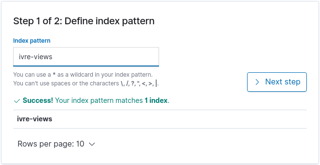
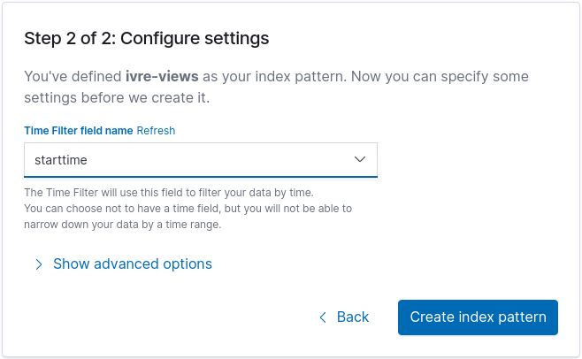

IVRE with Kibana¶
IVRE has an experimental backend for Elasticsearch for the view
purpose (see Purposes). Only Elasticsearch
7 supported and tested for now.
While this backend lacks a lot of features, it is enough to create a view into an Elasticsearch cluster. Other tools using Elasticsearch can then use IVRE’s data.
Installation¶
As stated in the installation page (see the Python section), you will need to install the elasticsearch and elasticsearch-dsl Python packages.
View creation¶
About views¶
Views are created from Nmap, Masscan or Zgrab2 scan results (stored in
the nmap purpose) and passive host intelligence collected by Zeek
(stored in the passive purpose). That is a prerequisite of view
creation so if you have not read it yet, you should go read
Active recon and
Passive first.
You can check you have data in the nmap and/or passive
purposes using the command line: ivre scancli --count and ivre
ipinfo --count.
Configuration¶
We need to configure IVRE to use the Elasticsearch database for the
view purpose. Since we want to do that only to create the view, we
are going to create a dedicated IVRE configuration file, for example
in ~/.ivre-elastic.conf; for example, to use an Elasticsearch
server running on the local machine:
echo 'DB_VIEW = "elastic://127.0.0.1:9200/ivre"' > ~/.ivre-elastic.conf
Then, to use this dedicated configuration file, we just have to set
the IVRE_CONF environment variable:
IVRE_CONF=~/.ivre-elastic.conf ivre view --count
Index creation & Data insertion¶
So now, we can create a view as we would do with any other
backend. For example, if we want to create a view using all the
records from the nmap and passive purposes:
IVRE_CONF=~/.ivre-elastic.conf ivre view --init < /dev/null
IVRE_CONF=~/.ivre-elastic.conf ivre db2view
The first command will drop any existing data, and create the index and mapping, and the second will create the view itself.
Using Kibana¶
From Kibana, you will have to create an index pattern (this can only
be done after the view creation). The default index name from view is
ivre-views; you can use this value as index pattern (and remove
the final * since we use only one index).

The field starttime can be used as the “Time Filter field name”.

You are all set! Now, explore this data set as you would explore any other one.
For a couple of examples of how Kiban can be used to explore IVRE’s data see the Kibana exploration part of the screenshot gallery for examples of useful visualizations.
If you have any troubles with Kibana, please refer to its documentation.